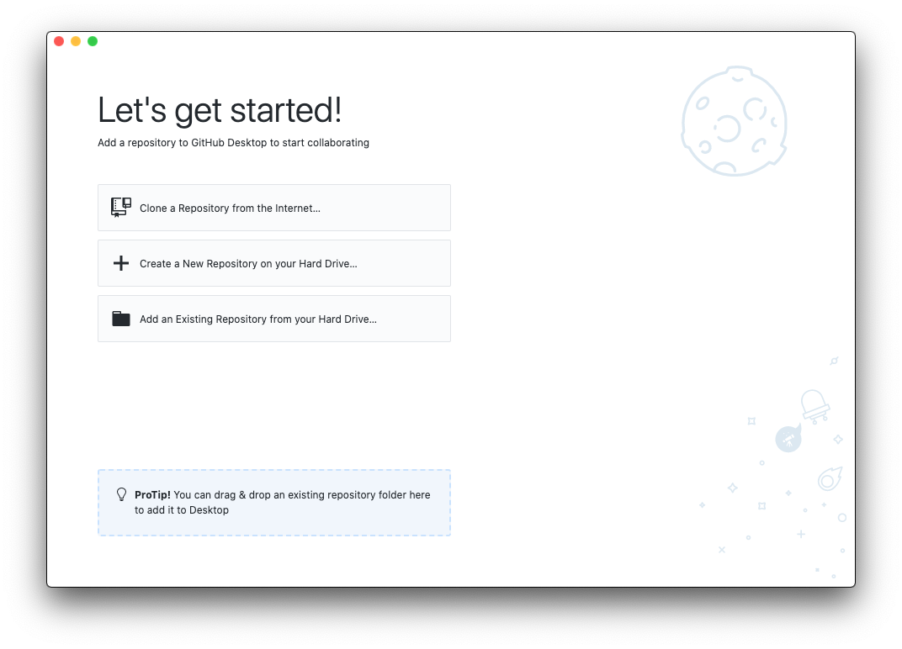
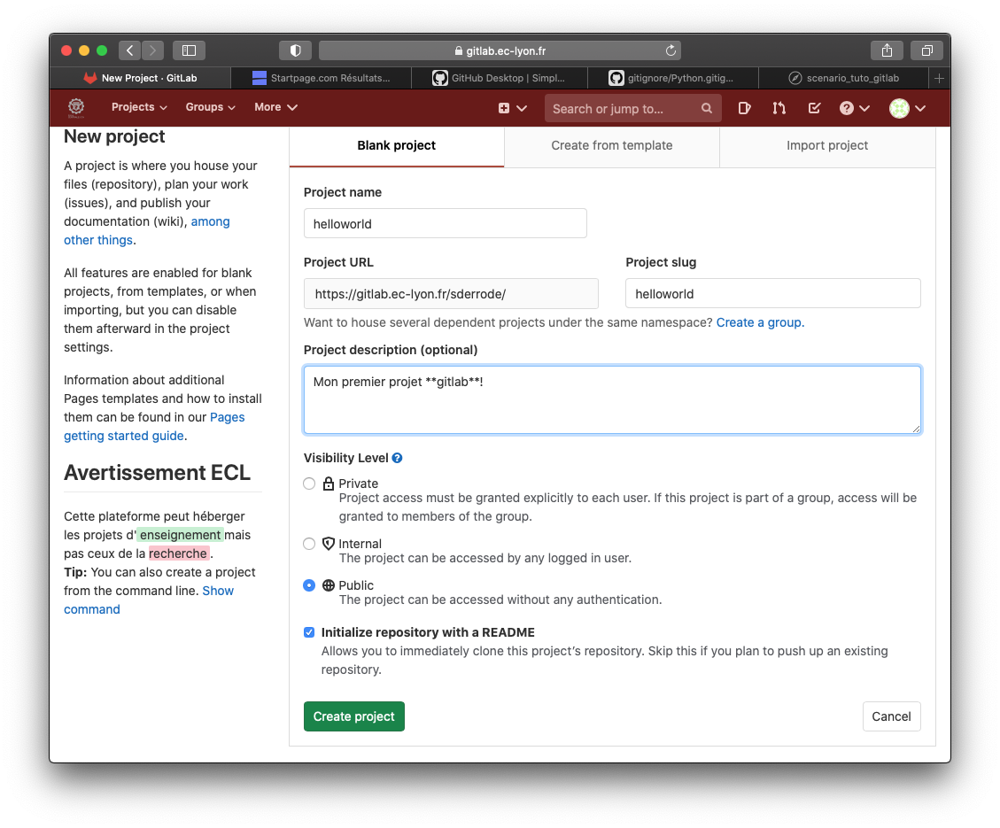
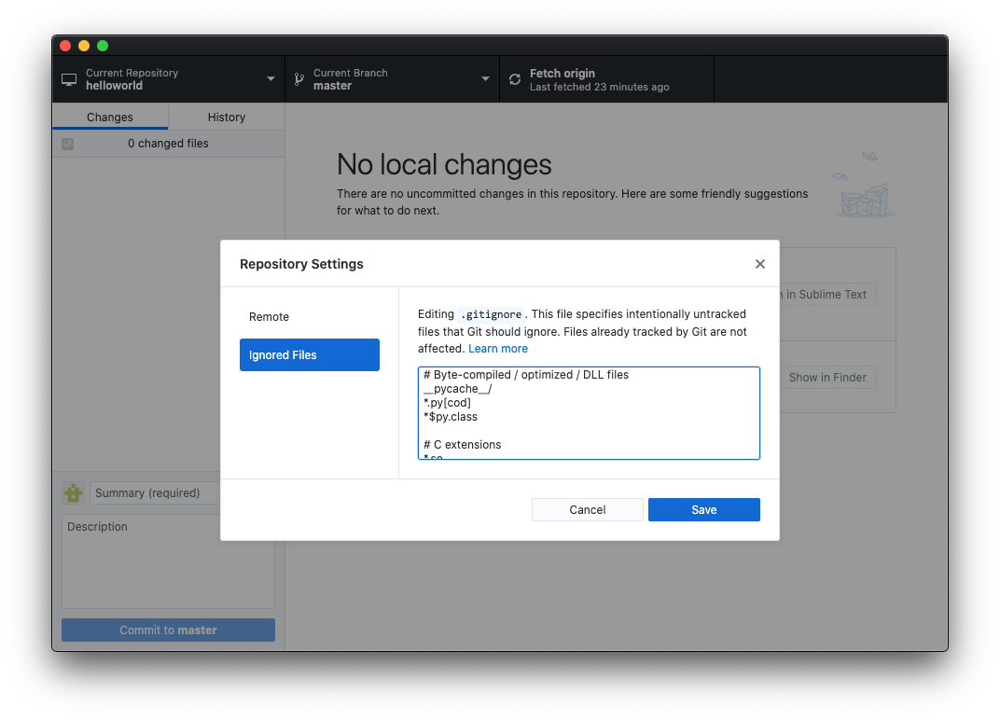
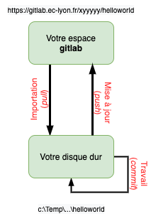

Tuto sur git/gitlab¶
Ce document présente un tuto à l’usage de git/gitlab. Il est consultable sous forme de vidéo sur le Moodle du cours, à l’adresse https://pedagogie1.ec-lyon.fr/course/view.php?id=969.
Comme tout tutoriel, ce document a besoin de vos retours pour s’améliorer! N’hésitez pas à m’envoyez un mail décrivant vos difficultés et, éventuellement, les solutions que vous auriez trouvées pour les contourner.
Installer git et Github Desktop¶
git est disponible par défaut sur les machines Mac OS X et Linux. S’il est absent de Windows (pour le savoir, lancez la commande git dans un Terminal/Invite de commandes), alors installez-le à partir de ce lien : git-scm. Lors de l’installation, validez les choix par défaut qui vous sont proposés.
L’interface Github Desktop que nous allons installer n’est absolument pas nécessaire pour travailler avec git. Mais elle évite, dans un premier temps, d’utiliser des commandes manuelles à partir d’un Terminal.
- Téléchargez, installez et lancez l’application Github Desktop.

- Configurer Github Desktop (cette étape n’est nécessaire que si vous ne l’avez pas déjà fait lors de l’installation du logiciel) : aller dans le menu
Préférences / git- entrez votre nom et votre adresse émail.
Gérer son premier projet git avec gitlab¶
- Montrer l’interface de gitlab
- Adresse: https://gitlab.ec-lyon.fr;
- Identifiant: ceux de Centrale;
- Naviguer dans le projet INF-TC2 (que les étudiants ont déjà étudié). Donner quelques explications sur l’interface.
- Créer un nouveau projet
- Nom : HelloWorld;
- Description: Mon premier projet gitlab;
- Discuter Public/Internal/Private;
- Sélectionner Initialize repository with a README; 
- Cliquer sur l’icône
Cloneet copiez le lienClone with HTTPS, qui ressemble à https://gitlab.ec-lyon.fr/xyyyyy/helloworld.git.
- Basculer sur Github Desktop,
- Sélectionner l’option
Clone a Repository from the Internet, puis l’ongletURL(ou menuFile,Clone repository). - Copier l’adresse précédemment mise en mémoire dans l’espace dédié, et choisir dans
local pathle répertoire dans lequel votre projet sera copié. Appuyez sur le boutonClonede l’interface pour lancer l’importation de votre projet gitlab sur votre machine. - Vérifier dans un gestionnaire de fichiers que le repo est bien copié localement sur sa machine et qu’il contient un répertoire caché (
.git) et le fichier readme.md. - Basculer sur l’onglet
history
- Sélectionner l’option
- Pour éviter que certains fichiers temporaires ne soient suivis par git, on va spécifier les fichiers a exclure dans un fichier appelé .gitignore (il s’agit d’un fichier caché). Pour cela
- Aller dans le menu
Repository, sous-menuRepository settings, puisIgnored Files. - Copier le contenu du fichier qui se trouve à l’adresse https://github.com/github/gitignore/blob/master/Python.gitignore dans l’espace réservé, puis
Save.
 - On doit alors Commiter les changements (le texte par défaut qui décrit le
commitest OK). Plus de détails sur cescommitplus loin.
- Aller dans le menu
- Éditer le fichier readme.md avec Sublime Text et enregistrer les changements localement:
- Basculer vers Github Desktop et discuter les changements qui interviennent sur l’interface.
- Commiter les changements, et monter l’onglet History.
- Pusher le travail vers gitlab en utilisant l’option Publish Branch.
- Basculer vers gitlab et vérifier que les changements ont bien étaient publiés
- Basculer vers Spyder pour éditer du code python:
- Taper un programme incremente_de_un(x) et sauvegarder dans votre répertoire local sous le nom de fichier incremente.py.
- commiter les changements dans Github Desktop
- Refaire la même chose avec un autre fichier (incremente_de_deux(x)), à sauvegarder dans un sous répertoire test.
- Pusher son travail vers gitlab, et vérifier que tout se met bien à jour.
De manière synthétique, une fois le projet créé,
- vous modifiez vos code sources, et enregistrez régulièrement vos changements avec un
commit(donc en local). Vous pouvezcommiterdes sources même s’ils ne sont pas terminés ou comportent des bugs. À ce stade cela n’a pas d’importance. - quand vous êtes content de votre travail, et que vos jugez vos algorithmes fonctionnels, vous publiez vos précédents
commitsur gitlab avec unpush.
Ce comportement est illustré par le schéma de la figure suivante:

Pour détruire ce projet (sans grand interêt), il faut :
- Quitter Spyder pour farmer les fichiers en cours.
- Détruire la version locale en utilisant Github Desktop: sélectionner l’onglet
Current Repository, et le menu contextuel sur le nom de votre projet permet d’accéder àRemove. Penser à cocher la suppression physique des fichiers si vous le souhaiter (sinon seul la gestion du projet par Github Desktop sera supprimée, les fichiers seront toujorus présents sur votre disque dur). - Détruire la version distante sur gitlab: Dans la barre de menu latérale à gauche de l’interface Web, sélectionnez l’icône représentant une roue crantée correspondant à
Settings. Dans le sous-menuGénéral, appuyez sur le boutonExpandcorrespondant à la ligne : Advanced. Tout en bas, sélectionnerDelete Project, copier la phrase demandée et appuyer sur le bouton pour confirmer.
A quoi ça sert d’utiliser git et gitlab ? Les avantages sont nombreux:
- Avoir un copie de son travail sur un serveur distant.
- Sauvegarde incrémentale et dun historique des modification (undo infini!)
- Partager son travail avec tout le monde (si votre projet est publique), ou avec des personnes choisies (invitations personnelles).
- Travailler à plusieurs sur le même projet et en même temps (mais ça, c’est un autre tuto…)
- fusion automatique (ou presque) des sources
- traçage des modification (qui, qoui)
Stéphane Derrode